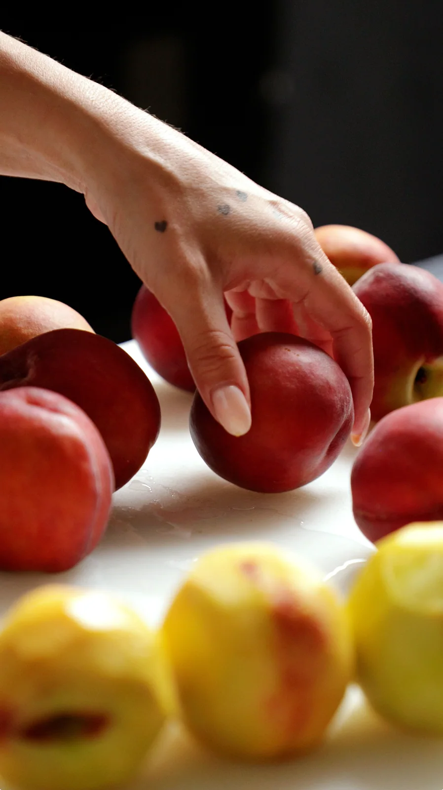

La contemporanea
Cornicione alto, centro sottile. La base casertana di Pasquale per le pizze di stagione.
Gli impasti di Pasquale, i fritti partenopei e i dolci lievitati. Una selezione della cucina di Pizzamore. La disponibilità cambia con le stagioni.

Cornicione alto, centro sottile. La base casertana di Pasquale per le pizze di stagione.
Morbido all’interno, croccante fuori. Arriva a spicchi, da passare al centro del tavolo.
Bassa e croccante, condita dopo la cottura. Ogni trancio lascia spazio a un abbinamento diverso.
Pomodoro, fiordilatte e basilico sulla tonda di Pizzamore.
Pasta di Gragnano e crema di zucchine, in una frittatina preparata espressa.
La base lievitata al caffè incontra la crema del tiramisù.